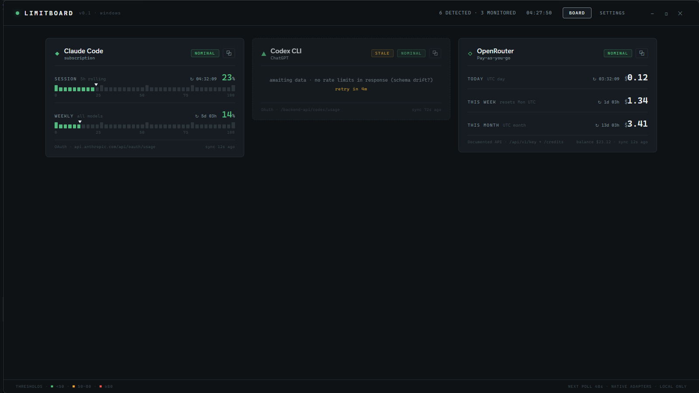
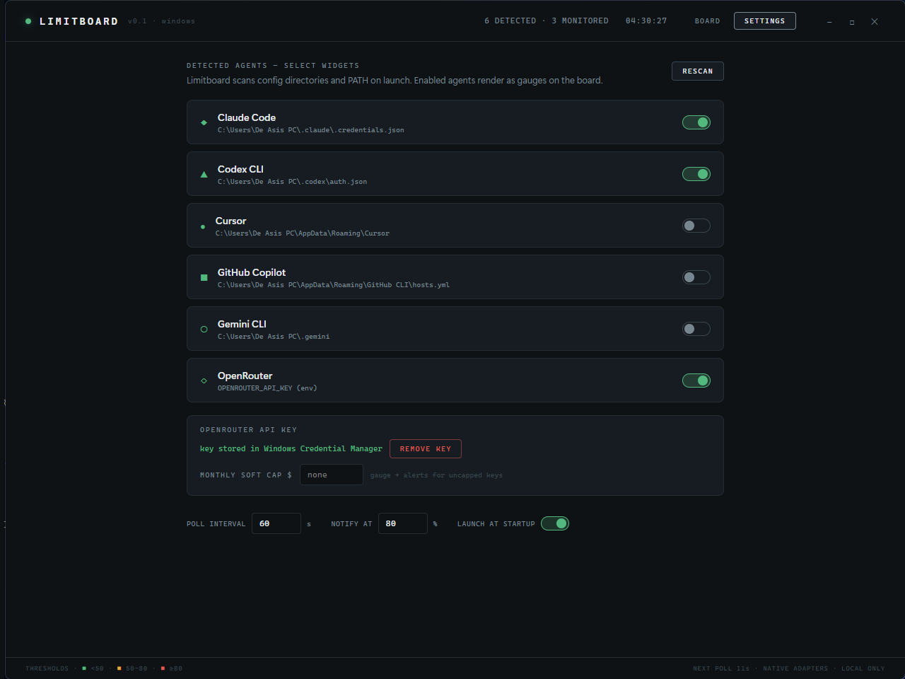
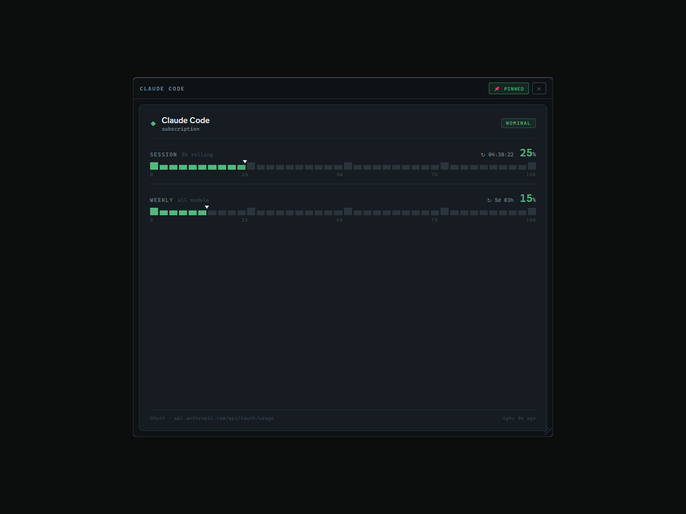

Limitboard
Every agentic CLI meters usage differently and hides it somewhere else. Limitboard detects the tools you’re logged into and turns their limits into one glanceable instrument panel, with tray alerts before a window binds.

live captureThe problem
Anyone running multiple agentic coding tools lives under several invisible meters at once. Claude Code has a 5-hour rolling session and two weekly windows; Codex tracks a 5-hour primary and a 7-day secondary; OpenRouter is pay-as-you-go spend with optional per-key caps. Each one is exposed in a different place: /usage inside Claude Code, /status inside Codex, browser dashboards for the rest. Checking any of them means interrupting the work the tools are supposed to accelerate. macOS users have menu-bar trackers for this; Windows has nothing.
The real cost isn’t the checking, it’s the not-checking. A limit that binds mid-run kills an agent session with no warning, and the work in flight goes with it. Limitboard makes every meter visible at a glance and warns before any of them binds, auto-detecting which CLIs are installed and authenticated, with zero manual credential entry and nothing ever leaving the machine.
“Six tools, six meters, six hiding places — one board.”
Local-first, with credentials treated as the whole risk surface
The app reads the credential files the CLIs already maintain: read-only, through a fixed whitelist in the Rust core, so the UI layer can never request an arbitrary path. Tokens are used in the native process and never reach the webview. The one pasted key the app accepts (OpenRouter) goes into Windows Credential Manager, never into config. I chose OS-keychain plus fixed-path whitelist over a convenient config file because a usage monitor that hoards credentials is a worse problem than the one it solves.
Degrade, never blank
Every usage endpoint here except OpenRouter’s is undocumented and can drift or rate-limit at any time. So failure is a first-class state: a failed poll keeps the last-good data on screen with a stale-age badge, errors push the provider into exponential backoff (2 to 15 minutes, rate-limits start higher), and a server-sent Retry-After overrides the formula, because retrying before a penalty expires restarts it. The board stays honest and useful with the network unplugged.
Fight platform quirks in the native layer, not the UI
When one provider’s API rejected browser-origin requests, the fetch moved into the Rust process, the same path any native client takes, instead of piling workarounds into the webview. Side effect: the OAuth token now never enters the UI layer at all.
- Auto-detects installed and authenticated agent CLIs on launch (credential files, then PATH, then env), showing the exact evidence for every probe.
- Live board of instrument-style gauge cards: session and weekly percentages, dollar spend windows, ticking reset countdowns.
- Any card drags out of the board into a floating always-on-top mini widget; a native ghost window follows the cursor beyond the app’s own bounds.
- Windows toast before any window crosses your threshold, with anti-flap hysteresis, and a tray icon dot colored by the worst gauge.
Three layers. A small Rust core owns everything security- and OS-shaped: detection probes, whitelisted credential reads, secret storage, tray icon rendering, and the floating-widget window management. A typed adapter layer gives every provider the same tiny contract (detect, fetch, normalize into usage windows), so schema drift in any one provider stays quarantined in one file. Above that, a polling store reduces snapshots, applies backoff, and shares state across windows, because the main board and each floating widget are separate webviews that must not double-poll the same endpoints.
The one design choice that holds it together: every path assumes the data source will misbehave. Adapters return errors as values instead of throwing; the reducer keeps last-good data; the UI renders staleness and retry countdowns instead of blanks. Monitoring your other tools is only useful if the monitor itself never lies about what it knows.


Not shipped publicly yet, and that’s honest: it runs on my machine every day, which is the point. It was built to solve my own multi-agent workflow, and the build proves out credential-safe native integration, drift-tolerant polling, and a Windows tray and widget experience that macOS-only trackers left unserved. Release packaging (MSI via CI) is wired and tagged for when it goes public. The cover screenshot is the app monitoring the very session that captured it, degraded Codex card and all: the failure handling on display is the feature.